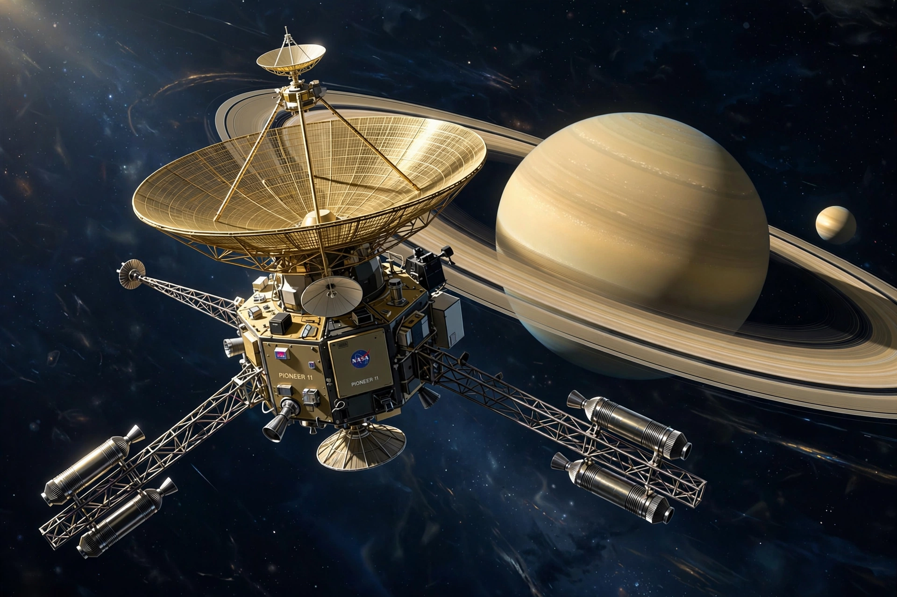

Pioneer 11 (also known as Pioneer G) is a NASA robotic space probe launched in 1973. It flew by Jupiter in 1974 and used the giant planet's gravity to slingshot onward to become the first probe to encounter Saturn, in 1979. Like its twin Pioneer 10, it carries the Pioneer plaque and is now leaving the Solar System.

| Mission type | Jupiter and Saturn flyby |
|---|---|
| Operator | NASA / Ames Research Center |
| Launch | April 6, 1973 (UTC), Cape Canaveral, Atlas-Centaur |
| Jupiter flyby | December 2, 1974 |
| Saturn flyby | September 1, 1979 (closest approach ~21,000 km) |
| Last contact | November 24, 1995 |
| Mass | 259 kg |
Pioneer 11 passed Jupiter at a closest approach of about 43,000 km above the cloud tops, imaging the Great Red Spot and the polar regions and measuring the mass of the moon Callisto. Mission planners then retargeted the craft using Jupiter's gravity toward Saturn. On September 1, 1979, it made the first flyby of Saturn, passing just outside the A ring, discovering a small moon (Epimetheus, nearly) and the narrow F ring, and charting the planet's magnetosphere and temperatures.
Routine contact ended on September 30, 1995, and the last communication was received that November, as the RTGs' power decayed and the craft's Earth-pointing geometry worsened. Pioneer 11 is heading toward the constellation Aquila and will pass near one of its stars in about four million years. Together with the Voyager probes and New Horizons, it is one of the few objects on a Solar-System-escape trajectory.
See also: Pioneer 10 · Pioneer program · Pioneer plaque